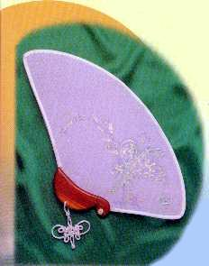

| Art Suprême |
(original en au lacien) |
|  |
| Peinture sur éventail par le Maître Suprême Ching Hai S.VP. référez-vous à la Collection des Créations Artistiques |
Ce n'est qu'après avoir contemplé le tableau, avec les couleurs du papillon et de la branche fleurie ainsi que la signature Ching Hai, que nous pouvons ressentir toute la beauté du rêve et la douceur d'une âme sainte à travers l'image des ailes du papillon, les feuilles et les fleurs dans l'immensité de la terre et du ciel. Avec sa couronne incrustée de jade et son manteau impérial, cousu de diamants scintillants, le petit papillon, majestueux et romantique ressemble à un prince se promenant au milieu d'un splendide palais céleste. La signature de Maître Ching Hai représente l'image d'un maître imposant, se tenant debout sur un croissant de lune brillant sur le petit papillon plein d'éclats et d'innocence.
Le chef d'œuvre Le rêve de Tchouang Tseu a été rapidement exécuté dans des teintes secondaires sans aucune couleur primaire. Le blanc, jade, violet foncé apparaissent et disparaissent sur un fond violet fleur d'aubergine traduisant la fraîcheur, la simplicité et la candeur d'un conte de fée. Elles décrivent un beau rêve, une subtile philosophie sur la réalité et les illusions de la vie lunaire.
Tchouang Tseu est un saint homme de l'antiquité. Un jour, il rêva d'être un papillon. A son réveil, il se demanda s'il était un papillon rêvant d'être Tchouang Tseu ou vis versa.
L'histoire, bien que teintée d'humour, nous démontre clairement que Tchouang Tseu concevait l'Unité de tous les êtres. La source d'inspiration de l'artiste illuminée s'est transformée en un tableau magique rapidement exécuté sur un éventail de soie, à la fois noble et mignon. Ceux qui vivent l'art seraient très heureux s'ils avaient l'occasion de contempler ce chef-d'œuvre avec ces points et traits rapidement jetés, ces couleurs secondaires, bien qu'épaisses, sont translucides comme des perles brillant au soleil levant.